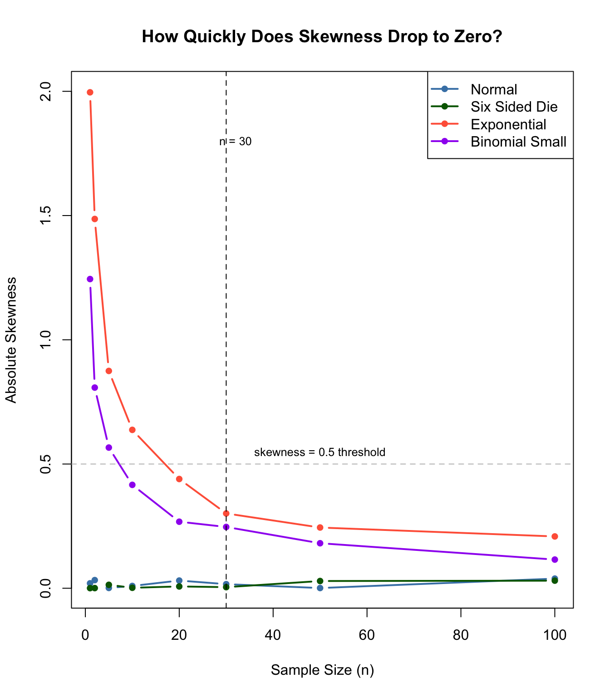

Code
set.seed(1278)
B <- 10000
library(moments)This document summarizes the findings from my Monte Carlo investigation of the Central Limit Theorem (CLT) across five different population distributions. For each distribution I investigated how quickly the sampling distribution of the sample mean approaches normality as the sample size n increases.
Before presenting results I want to clearly state the standard I used consistently across all distributions to decide when a sampling distribution was “approximately normal”:
I applied this same standard to every distribution so that my conclusions are consistent and comparable.
set.seed(1278)
B <- 10000
library(moments)set.seed(1278)
B <- 10000
# Function to compute stats from a vector of sample means
get_stats <- function(means) {
c(skewness = round(skewness(means), 4),
kurtosis = round(kurtosis(means), 4))
}
# Run simulations at the chosen n for each distribution
normal_stats <- get_stats(replicate(B, mean(rnorm(1))))
die_stats <- get_stats(replicate(B, mean(sample(1:6, 10, replace = TRUE))))
exp_stats <- get_stats(replicate(B, mean(rexp(30, rate = 1))))
binom_stats <- get_stats(replicate(B, mean(rbinom(100, size = 5, prob = 0.10))))
results <- data.frame(
Distribution = c("Standard Normal", "Six Sided Die", "Exponential",
"Binomial Small", "Cauchy"),
Population_Shape = c("Symmetric, bell-shaped",
"Symmetric, discrete uniform",
"Strong right skew",
"Extreme right skew, discrete",
"Symmetric, undefined mean and variance"),
Smallest_n = c("1", "10", "30", "100", "Never"),
Skewness_at_n = c(normal_stats["skewness"],
die_stats["skewness"],
exp_stats["skewness"],
binom_stats["skewness"],
"undefined"),
Kurtosis_at_n = c(normal_stats["kurtosis"],
die_stats["kurtosis"],
exp_stats["kurtosis"],
binom_stats["kurtosis"],
"undefined"),
Key_Observation = c(
"Already normal — CLT not needed",
"Symmetry helps CLT converge quickly",
"n=30 rule holds but barely",
"n=30 rule clearly fails",
"CLT breaks down — mean and variance are undefined"
)
)
knitr::kable(results,
col.names = c("Distribution", "Population Shape",
"Smallest n", "Skewness at n",
"Kurtosis at n", "Key Observation"),
caption = "Summary of CLT Convergence Across Distributions")| Distribution | Population Shape | Smallest n | Skewness at n | Kurtosis at n | Key Observation |
|---|---|---|---|---|---|
| Standard Normal | Symmetric, bell-shaped | 1 | 0.0141 | 2.9719 | Already normal — CLT not needed |
| Six Sided Die | Symmetric, discrete uniform | 10 | -0.0082 | 2.8168 | Symmetry helps CLT converge quickly |
| Exponential | Strong right skew | 30 | 0.3423 | 3.1774 | n=30 rule holds but barely |
| Binomial Small | Extreme right skew, discrete | 100 | 0.1121 | 3.0359 | n=30 rule clearly fails |
| Cauchy | Symmetric, undefined mean and variance | Never | undefined | undefined | CLT breaks down — mean and variance are undefined |
n_values <- c(1, 2, 5, 10, 20, 30, 50, 100)
# Calculate skewness across n for each distribution
skew_normal <- numeric(length(n_values))
skew_die <- numeric(length(n_values))
skew_exp <- numeric(length(n_values))
skew_binom <- numeric(length(n_values))
for (i in seq_along(n_values)) {
n <- n_values[i]
skew_normal[i] <- skewness(replicate(B, mean(rnorm(n))))
skew_die[i] <- skewness(replicate(B, mean(sample(1:6, n, replace = TRUE))))
skew_exp[i] <- skewness(replicate(B, mean(rexp(n, rate = 1))))
skew_binom[i] <- skewness(replicate(B, mean(rbinom(n, size = 5, prob = 0.10))))
}
plot(n_values, abs(skew_normal), type = "b", col = "steelblue", lwd = 2,
ylim = c(0, 2), xlab = "Sample Size (n)", ylab = "Absolute Skewness",
main = "How Quickly Does Skewness Drop to Zero?",
pch = 16)
lines(n_values, abs(skew_die), type = "b", col = "darkgreen", lwd = 2, pch = 16)
lines(n_values, abs(skew_exp), type = "b", col = "tomato", lwd = 2, pch = 16)
lines(n_values, abs(skew_binom), type = "b", col = "purple", lwd = 2, pch = 16)
abline(h = 0.5, lty = 2, col = "gray")
abline(v = 30, lty = 2, col = "black")
legend("topright",
legend = c("Normal", "Six Sided Die", "Exponential", "Binomial Small"),
col = c("steelblue", "darkgreen", "tomato", "purple"),
lwd = 2, pch = 16)
text(32, 1.8, "n = 30", cex = 0.8)
text(50, 0.55, "skewness = 0.5 threshold", cex = 0.8)
This plot shows how quickly the absolute skewness of the sampling distribution drops toward zero for each distribution. The Standard Normal and Six Sided Die converge almost immediately. The Exponential takes longer. The Binomial Small is the slowest of all. The Cauchy is excluded because its skewness is undefined.
Based on my investigation, no — n = 30 is not a universal rule.
The answer depends heavily on the shape of the population:
The n = 30 rule is a reasonable starting point for mildly skewed distributions but it breaks down for highly skewed or heavy tailed populations.
Fastest: Standard Normal — already normal at n = 1, no convergence needed
Second fastest: Six Sided Die — symmetric population means no skew to overcome, converges by n = 10
Middle: Exponential — right skewed but CLT still applies, converges around n = 30
Slowest (among those where CLT applies): Binomial Small — extreme skew and discreteness slow convergence significantly, needs n = 100
Does not converge: Cauchy — CLT fails entirely due to infinite variance
The CLT relies on three key assumptions:
The Cauchy distribution violates the finite-variance requirement of the CLT. More fundamentally, the ordinary Cauchy distribution has no finite mean and no finite variance. Therefore, no matter how large n becomes, the sampling distribution of the sample mean does not converge to a normal distribution. Extreme observations continue to dominate the sample mean and keep it highly unstable.
This is not just a theoretical curiosity. It is a practical warning that statistical rules of thumb always come with assumptions, and blindly applying the n = 30 rule without checking those assumptions can lead to seriously wrong conclusions.
The Central Limit Theorem is one of the most powerful results in statistics, but it is not magic. It works gradually, it works faster for some populations than others, and it fails entirely when its assumptions are violated.
The key takeaways from this investigation are: